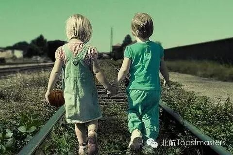
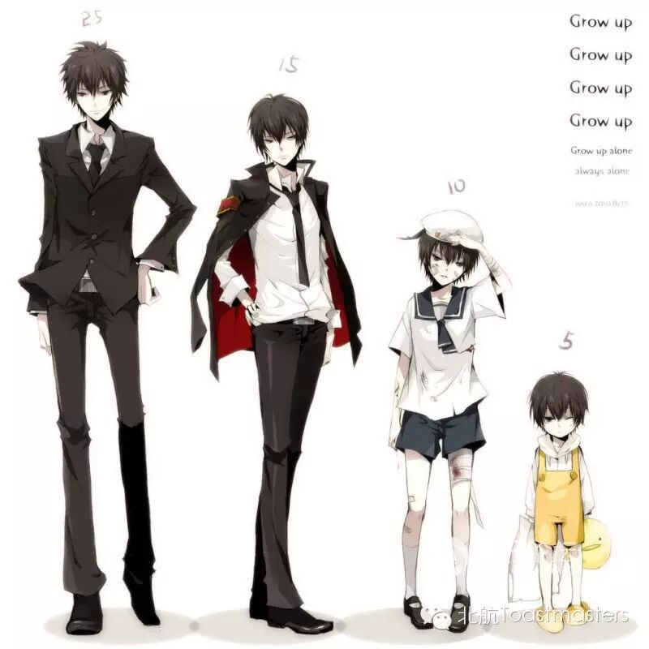
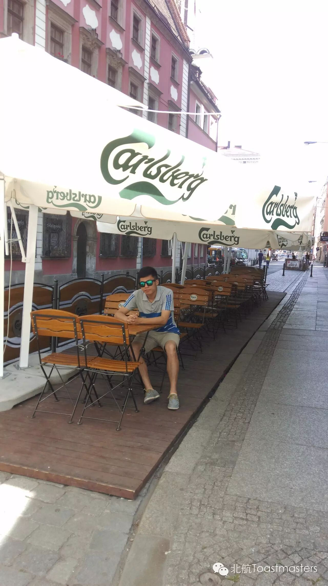

Puppy Love
TM：Jill
TTM：Bowen
When I saw the words ”puppy love”, a movie named “Flipped” ran into my mind immediately. The girl in the movie fell in love with the boy at the first sight and after several years of living together, they came to know each other deeper and better. And of course they had a happy ending in the end. I believe many of you must have dreamed of having a relationship like that with someone when you were a child, it must bevery touching and warming to have a period of memory like that. If you wanna share something about your “puppy love” or if you wanna hear some wonderful stories about “puppy love”, don’t hesitate, just come to our meeting this Friday!

The way I grow up
When all of us came into this world, we were just a little baby, knowing nothing but cry. But years after years, we grow up to be an adult, knowing clearly what we should do and what we shouldn’t do. The trace each person grows up is unique from others’. So, how does John grow up from a “little fresh meat” to a responsible man? Just come to our meeting and you will find your answer.

Who am I
“Who am I?”, “Where do I come from? ”, ”Where should I go?” These three questions are the basic questions of philosophy filed. Maybe some of you have already thought of these questions and have some opinions about them. And I believe you must be very curious about what opinions Han, a handsome, clamman, has in his mind. Welcome to our meeting and let’s hear Han’s first CCspeech together!
Be brave to do everything
What stops you from starting doing onething? “I’m afraid I would screw it up.” “I’m afraid I don’t have the abilityto complete it very well.” “I’m afraid I won’t have enough time.” “I’m afraid Iwould be laughed at if I failed.” There are so many “I’m afraid”. Just stop it,and hear what Vance will tell us during his CC3 speech.
Toastmasters International (TI) is a nonprofit educational organization that operates clubs worldwide for the purpose of helping members improve their communication, public speaking, and leadership skills.
https://mp.weixin.qq.com/s/9yrwZEHCGg6n2vrjLM_g_Q
本页为抢救式本地归档，图文已永久保存。